3 魅力无穷的无字证明
纯数学的对象是现实世界的空间形式和数量关系，“数”和“形”是数学中两个最基本的概念，它们既是对立的，又是统一的，每个几何图形中都蕴含着与它们的形状、大小、位置密切相关的数量关系；反之，数量关系又常常可以通过几何图形作出直观的反映和描述。
——恩格斯
平面几何研究的是平面上的点、线、三角形、正方形、圆等几何对象，它是历史最悠久的数学分支之一，几何对后世的数学发展影响最大。在古希腊几何不是单纯的作为实用的工具，而是作为锻炼思考、启迪智慧的学问而存在。人们通过学习几何可以认识丰富多彩的几何图形，建立与发展空间观念，掌握必要的几何知识，培养运用这些知识认识世界与改造世界的能力。
欧几里得在他的不朽名作《几何原本》中提出了23个定义、5条公设和5条公理（欧几里得把公设看作是只在几何中正确的公理，如第一公设“由任一点至任一点可作一直线”，而公理则放之四海而皆准，如第二公理“等量加等量，和相等”，现代数学中不作这样的区分，都称为公理），然后试图只用这些定义、公设和公理来推导出整个几何学的定理。
证明是指在一个特定的公理系统中，根据一定的规则或标准，由公理和定理推导出某些命题的过程。在证明过程中，每步推理的依据就是学过的公理、定理、定义。
华罗庚曾有诗：
“数形本是相倚依，焉能分作两边飞？
数缺形时少直观，形缺数时难入微。
数形结合百般好，隔离分家万事休。
几何代数统一体，永远联系莫分离。”
运用数形结合，将某些抽象的数学问题直观化、生动化，能够变抽象思维为形象思维，这样就有助于学习数学。这里将数学命题用简单、有创意而且易于理解的几何图形来呈现。列举其中十分简洁和精彩的几种代数、几何、三角的证明，可以了解到真正美丽的数学证明不需要太多的言语。
平面几何的两个基本定理
欧几里得衍生出平面几何的第一个定理便是如下著名结论：
【定理1】三角形内角和为180°。
有趣的是，这个定理并非直观，但都可以通过图形得到十分简洁的证明。
【证明1】（通过平移、旋转）得到一个平角，故三角形的内角和是180°。
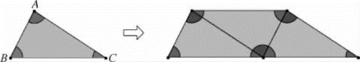
【证明2】过点B 作直线A′C′∥AC，则∠A′BA＝∠A（两直线平行，内错角相等），∠C′BC＝∠C（两直线平行，内错角相等），∵∠A′BA＋∠ABC＋∠C′BC＝180°，∴∠A＋∠ABC＋∠C＝180°（等量代换）。
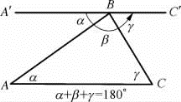
【证明3】利用圆周角是对同弧的圆心角的一半即得，如下图。
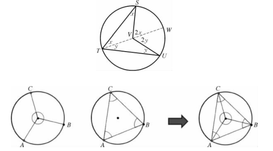
【定理2】三角形面积等于底乘以高除以2。
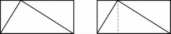
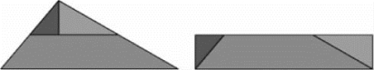
勾股定理
【定理3】直角三角形两直角边的平方和等于斜边的平方。
勾股定理的证明方法最多，据说已超过500种。卢米斯（E．S．Loomis）在他的《毕达哥拉斯定理》（The Pythagorean Proposition）一书的第二版中收集了这个著名定理的370种证法，并且进行了分类。该书1940年发行于Edward Brothers私人出版的Ann．Arbor．Mich．，后又由The National Council of Mathematics，Washington，D．C．再版。
中国古代数学家们对于勾股定理的发现和证明，在世界数学史上具有独特的贡献和地位。2002年国际数学家大会在北京召开，大会的会标是公元3世纪初三国时期数学家赵爽画的“弦图”，体现了数学研究中的继承和发展。赵爽的“弦图”隐含了勾股定理的两种面积证法。赵爽用几何图形的截、割、拼、补来证明代数式之间的恒等关系，实在让人拍案叫绝。
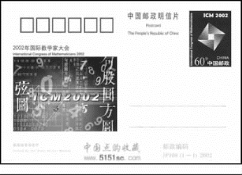
2002年国际数学家大会纪念邮资明信片，邮资图为大会会徽
【证明1】由“弦图”知，边长为c的正方形面积等于边长为a＋b 的正方形面积减去4个两直角边为a，b 的三角形面积，即c2＝
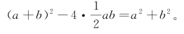
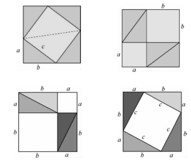
【证明2】
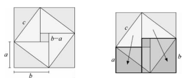
由“弦图”知，边长为c的正方形面积等于边长为b－a 的正方形面积加上4个两直角边为a，b的三角形面积，即c2＝（b－a）2＋
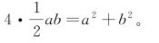
赵爽的“弦图”证法优美精巧，是证明勾股定理最著名的证法之一，特别是“弦图”一图蕴涵两种证法更是举世无双。“弦图”正是勾股定理的无字证明，充分体现了我国古代的数学文化。本题补形后的“弦图”不仅图形对称完美，而且证明思路更加清晰，证法更加简洁直观，使我们再次领会到“弦图”的魅力和丰富的数学内涵。
【证明3】另一种“割补法”。
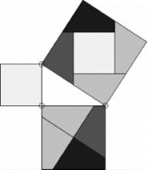
【证明4】用半圆内的“射影定理”。
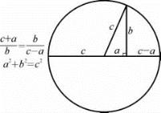
【证明5】据说是意大利画家达·芬奇（da Vinci，1452—1519）发现的，用的是相减全等的证明法。
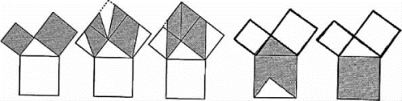
【证明6】
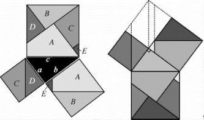
【证明7】利用△ABC∽△ACD∽△CBD。
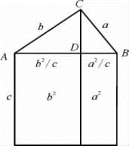
其他一些有趣结果
【结论1】五角星形的顶角和是180°。
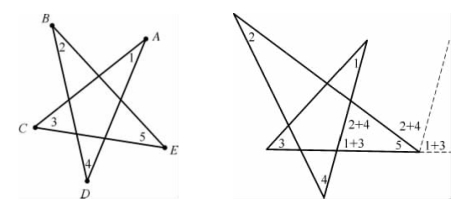
【结论2】顶点是（0，0），（2，1），（3，2），（1，1）的平行四边形的面积是1。
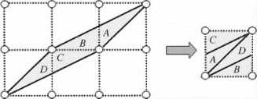
【结论3】维维亚尼（Viviani）定理：在等边三角形内任意一点P 至三边的距离之和，等于三角形的高。
这个定理可一般化为：等角多边形内任意一点P 跟各边的垂直距离之和是不变的，跟该点的位置无关。
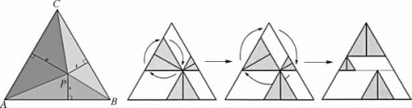
【定理4】三角形的面积等于内切圆的半径乘以半周长：
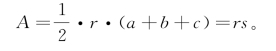
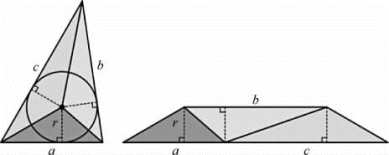
【定理5】两个数的算术平均数恒不小于其几何平均数：
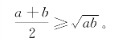
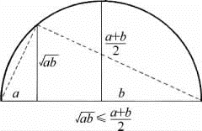
【定理6】（托勒密定理）圆内接凸四边形两对对边乘积的和等于两条对角线的乘积。
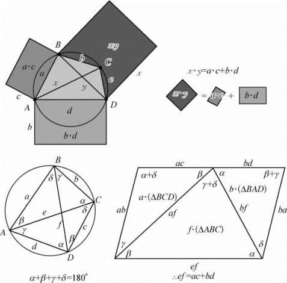
一个有趣的特殊情况是当四边形ABCD 是矩形时，我们得到另一个毕达哥拉斯定理的证明。
【结论4】一个对角线垂直的圆内接四边形的4条边的平方和等于直径的平方。
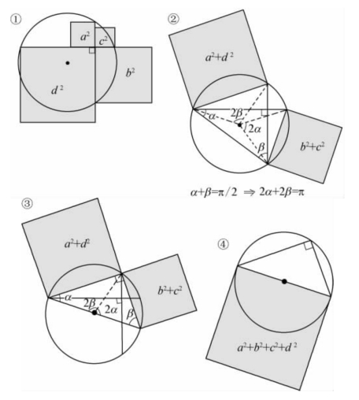
与整数有关的结果
【定理7】
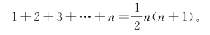
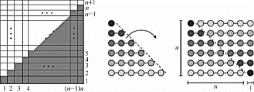
【定理8】1＋3＋5＋…＋（2n－1）＝n2。
【证明1】
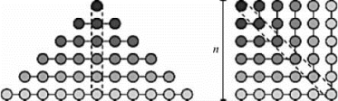
【证明2】
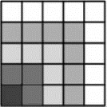
【定理9】
（1＋2＋3＋…＋n）2＝13＋23＋33＋…＋n3。
【证明1】
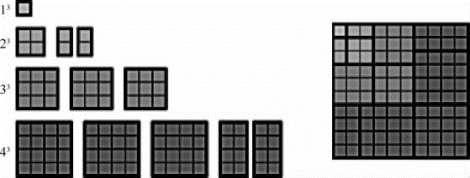
【证明2】
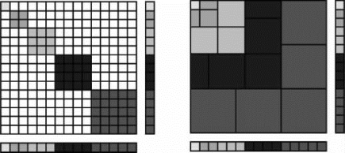
1×12＋2×22＋3×32＋4×42＋5×52＋…＋n×n2＝13＋23＋33＋43＋53＋…＋n3。
【证明3】这是弗里（A．L．Fry）发现的。
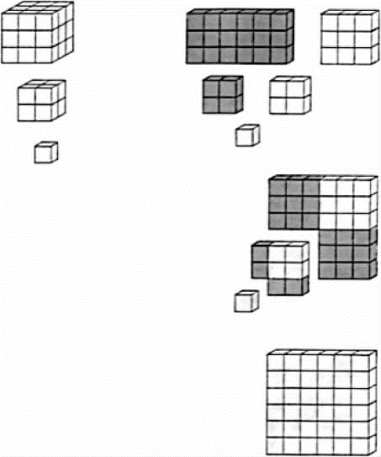
【证明4】这是洛夫（J．B．Love）发现的。
13＋23＋33＋…＋n3＝（1＋2＋3＋…＋n）2
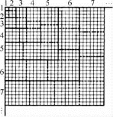
【定理10】
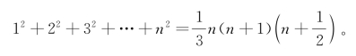
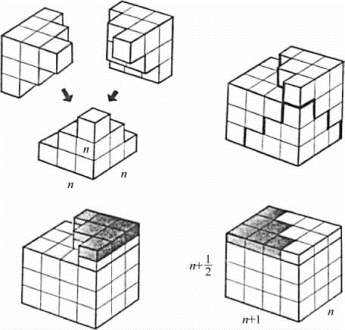
发现这个证明的香港大学教授萧文强
【结论5】
我国古代学者庄子（约公元前369—前286）是一个著名思想家，在《庄子·天下篇》中有一句话：“一尺之锤，日取其半，万世不竭。”讲的是这个定理。
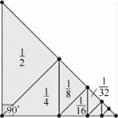
【结论6】（－1）n－1·1＋（－1）n－2·3＋（－1）n－3·5＋（－1）n－4·7＋…＋（－1）0·（2n－1）＝n。
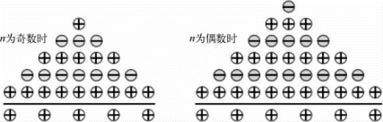
发现这个证明的是美国数学家亚瑟·本杰明（Arthur T．Benjamin，1961— ），他专长在组合数学。自1989年以来，他一直是加州哈维·马德学院（Harvey Mudd College）的数学教授，而且是有名的数学魔术师。
亚瑟·本杰明
与三角比有关的定理
【定理11】半角定理：
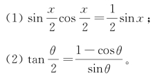
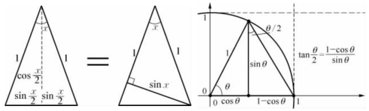
【定理12】余弦定理。
【证明1】这是孔（S．H．Kung）发现的。
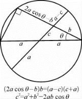
【证明2】
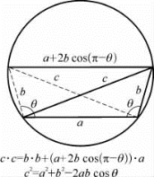
【定理13】正弦、余弦的和差定理。
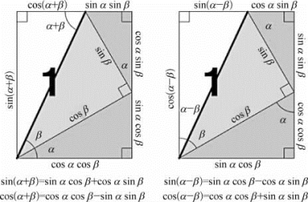
数形结合思想是一种可使复杂问题简单化、抽象问题具体化的常用数学思想方法。读者可以参看罗杰·纳尔逊（Roger Nelson）的三册精彩的书《无字证明》（Proof without Words），提升解题能力。
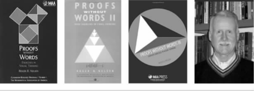
纳尔逊及其出版的3本好书
动脑筋 想想看
1．你能看懂下面的证明吗？
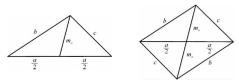
2b2＋2c2＝a2＋（2ma）2
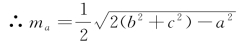
2．已知x ＋y＝12，求
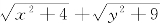
的最小值。利用下图可以容易轻松获解。
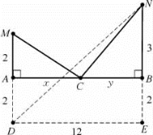
3．求｜x－1｜＋｜x－2｜＋｜x－3｜＋｜x－4｜＋…＋｜x－2 017｜的最小值。
4．三角形三边长为a、b、c，则abc ≥（a＋b－c）（b＋ca）（c＋a－b）。